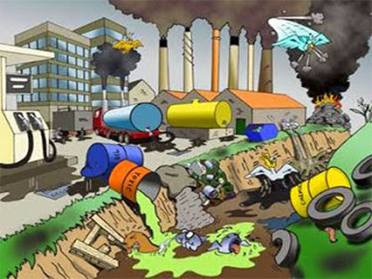

Inicio
Esta página web habla del reciclaje, de las basuras principalmente y como las personas no le damos un buen manejo a los desechos, se va a dar información acerca de algunas clases de basura y a qué lugares deben ser llevadas, también se hablará de su clasificación según la composición química.

Sobre nosotros
Estamos para brindar todo tipo de información acerca del reciclaje y el manejo de las basuras para ayudar al medio ambiente en Bogotá, brindamos información necesaria y que todos los ciudadanos deben saber, en estos momentos nuestro principal objetivo es generar conciencia para poder ayudar con el problema que se está presentando actualmente con el relleno sanitario de la ciudad de Bogotá.

Toma conciencia
Tal vez pensarás que el problema que se está presentando con el relleno de doña Juana solo va a afectar a las personas que viven cerca a el, pero esto es una gran mentira, el problema con el relleno sanitario no solo afecta porque no se recoge la basura o porque las personas se están enfermando debido a las bacterias segregadas por la descomposición de la basura, la realidad es otra y es que los ciudadanos en general nos estamos enfermando lentamente y no es solo a nivel nacional, estos problemas ambientales afectan al mundo entero. La contaminación, causa problemas en el cambio climático y poco a poco el medio ambiente se va degradando, la cantidad de gases que provienen de las basuras pueden generar enfermedades en los huesos y en la sangre, estas y muchas más son las consecuencias del mal manejo de las basuras, es por ello que debemos tomar conciencia y debemos reducir la generación de residuos y debemos reciclar.